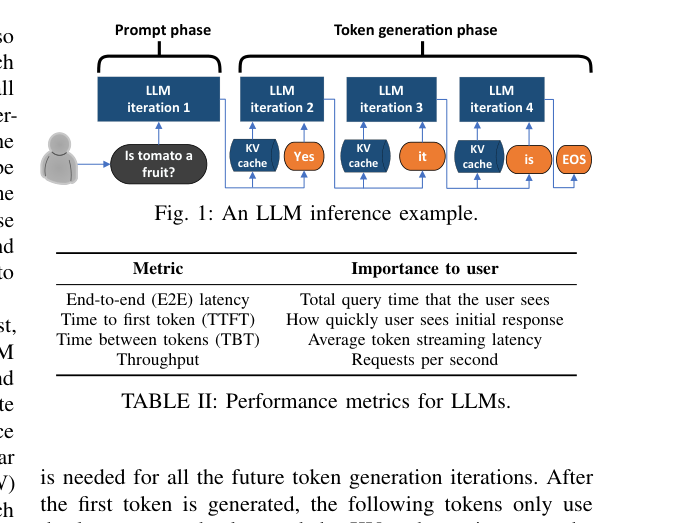
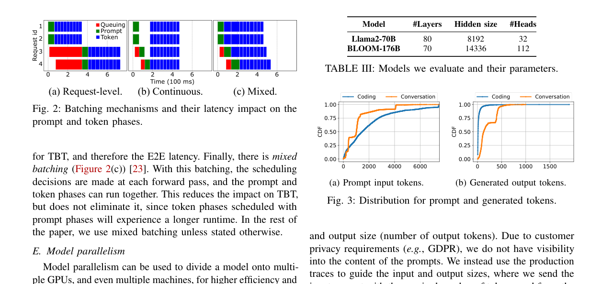
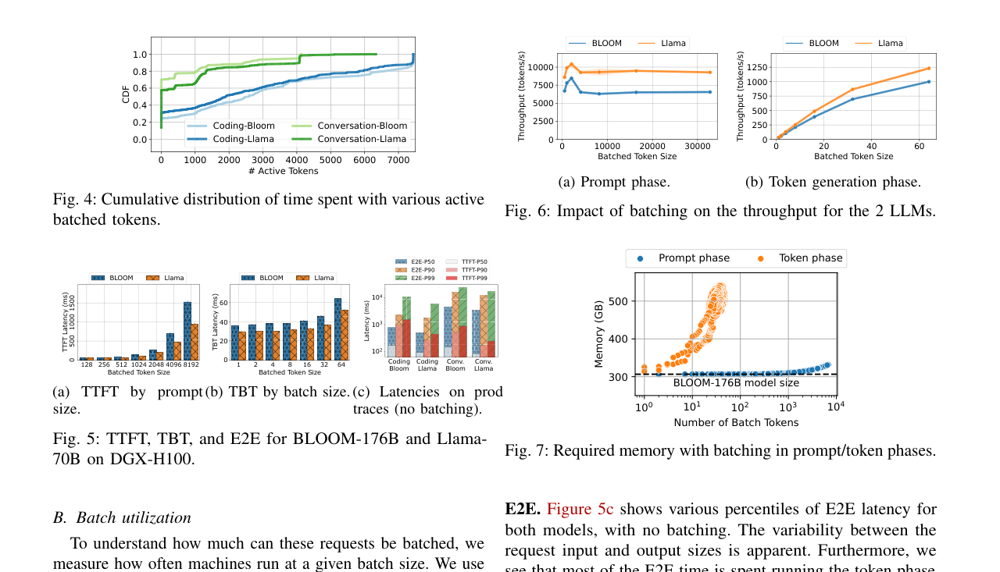

Splitwise：基于阶段拆分的高效生成式 LLM 推理：中文精读与校订
这篇论文做什么？
依据 prompt 阶段计算密集、token generation 阶段带宽密集的差异，把两阶段放到专属机器，并允许用不同代际 GPU 独立配置，以优化吞吐、成本或功耗。
- 观察：decode 常低算力利用率，昂贵的新 GPU 的计算能力被浪费。
- 方法：prompt/token 两池、KV 状态传输和三种集群配置目标。
- 结果：同构配置可达 1.4× 吞吐且成本低 20%；等成本功耗下最高 2.35× 吞吐。
校订说明：本页按原论文的论证顺序重写术语与因果关系；图均裁自论文原图，数据结论保留论文适用条件，不把峰值结果泛化为固定加速。
摘要。生成式大语言模型（LLM）应用的快速增长导致大规模部署昂贵且高功耗的 GPU。论文对 LLM 推理的特征化分析表明，每个推理请求经历两个阶段：计算密集的 prompt 处理阶段和内存密集的 token 生成阶段，各自具有截然不同的延迟、吞吐量、内存和功耗特征。尽管有最先进的批处理和调度，token 生成阶段仍严重浪费计算资源。与 prompt 处理不同，token 生成不需要最新 GPU 的计算能力，可以在更低功耗和成本下运行。基于这些观察，论文提出 Splitwise——一种将 LLM 推理请求的两阶段拆分到不同机器上的模型部署和调度技术。Splitwise 支持使用适合各阶段的硬件进行阶段特定资源管理，并通过集群后端互连高效传输请求状态。相比现有设计，Splitwise 集群在成本降低 20% 的同时实现 1.4 倍吞吐量，或在相同功耗和成本预算下实现 2.35 倍吞吐量。
1 引言
生成式 LLM 推理包含两个截然不同的计算阶段。Prompt 处理阶段将全部输入 prompt token 并行通过前向传播生成首个输出 token，计算密集，需要最新 GPU 的高 FLOPS。Token 生成阶段基于前向传播逐步生成后续 token，由于缺乏计算并行性，内存带宽和容量受限，尽管有最先进的批处理仍严重浪费计算资源。
在相同机器上运行两阶段常因 prompt 和 token 阶段的任意批处理导致端到端延迟不一致。服务方不得不过度配置昂贵 GPU 来满足交互式应用的严格 SLO。同时，云服务商面临 GPU 需求激增和功耗墙问题。
1.1 GPU 代际间的计算与内存失衡
从 A100 到 H100，TFLOPS 增加 3.43 倍，功耗增加 1.75 倍，但 HBM 带宽仅增长 1.64 倍，内存容量不变（80GB）。计算能力增长远快于内存带宽和容量。这意味着 token 生成阶段的内存瓶颈在新一代 GPU 上更加突出，而 prompt 处理阶段才能充分利用新 GPU 的算力。
2 Splitwise 设计
Splitwise 将推理请求的两阶段拆分到不同机器上运行。Prompt 处理在计算密集型机器上执行，token 生成在内存优化型机器上执行。两阶段之间通过优化的网络库在后端 InfiniBand 互连上传输 KV cache。
2.1 阶段特定资源管理
由于两阶段的资源需求不同，Splitwise 允许为各阶段配置不同硬件。Prompt 机器使用最新高算力 GPU（如 H100），token 机器可使用旧一代 GPU（如 A100）或设置功耗上限。这种异构配置提高了性能/美元（Perf/$）和性能/瓦特（Perf/W）。
2.2 状态传输
Prompt 处理完成后，生成的 KV cache 需从 prompt 机器传输到 token 机器。Splitwise 使用优化的 RDMA 传输在 InfiniBand 上完成这一操作。对于 13B 模型、512 token 的 prompt，KV cache 约 864 MB，在 400 Gbps 带宽下传输仅需约 17 ms，相对于 prompt 处理的数百毫秒可以接受。通过流水线化传输与计算，实际开销进一步降低。
3 集群设计
Splitwise 探索了同构和异构集群部署。同构集群中所有机器使用相同 GPU，但分别承担 prompt 或 token 角色；异构集群中 prompt 机器和 token 机器使用不同 GPU 型号或功耗配置。
3.1 吞吐量优化
通过生产环境 trace 分析，论文发现 prompt 和 token 阶段的利用率差异显著。Splitwise 根据工作负载特征调整两阶段的机器比例和硬件配置，在满足 SLO 的前提下最大化总吞吐量。
3.2 功耗与成本优化
异构 Splitwise 集群可以使用低功耗 GPU 承担 token 生成，降低总体功耗。在相同功耗和成本预算下，Splitwise 集群实现 2.35 倍吞吐量；在相同 SLO 下，实现 1.4 倍吞吐量并降低 20% 成本。
4 实验评估
评估使用生产环境 LLM 推理 trace，覆盖 OPT-66B、LLaMA-7B 等模型。对比基线为传统共置部署（所有请求在同一机器上完成两阶段）。Splitwise 在各种配置下均优于基线，改善幅度随 prompt 长度和生成长度增加而增大——因为长 prompt 的 prefill 计算密集特征更突出，长生成的 decoding 内存密集特征更突出，拆分的收益更明显。
5 与 DistServe 的关系
Splitwise 与 DistServe 都采用 prefill-decoding 解耦思路，但侧重点不同。DistServe 侧重在相同硬件上通过 GPU 级解耦消除干扰并优化 goodput；Splitwise 侧重在集群级利用异构硬件为各阶段配置不同资源，优化成本、功耗和吞吐量的三维目标。两者互补：DistServe 的调度算法可以结合 Splitwise 的异构硬件配置。
6 局限与选题启发
Splitwise 的阶段拆分是机器级的，在 prompt 和 token 机器之间引入网络传输依赖。虽然单次传输开销小，但在高并发下网络可能成为瓶颈。此外，异构硬件配置增加了集群管理复杂度。对于 agentic workflow 场景，一个 agent 的输出可能是下一个 agent 的输入，跨机器的状态传输延迟会累积。
对本仓库方向的意义。Splitwise 将 prefill-decoding 解耦从 GPU 级扩展到集群级，引入了异构硬件配置的维度。在多 LLM agent 工作流中，不同 agent 可能使用不同模型，各阶段的资源需求各异。Splitwise 的异构部署思想可以指导工作流调度器在异构云 GPU 上做成本最优的模型分配——这正是 Coral（异构云 GPU 多 LLM 服务）的核心理念。
公式与目标函数
拆分只有在阶段专属批处理和硬件匹配带来的收益大于 KV 传输与额外排队时才成立；因此高速 backplane 是设计前提。
原论文图解



证据边界与校订结论
Splitwise 的主要论证来自硬件 characterization 与容量规划：prefill 能吃满算力，decode 更依赖显存带宽和 batch。论文给出的最佳配置依赖流量长度分布、机器代际、互连和目标函数；它不是宣称旧 GPU 在任何 decode 场景都更快，而是说明旧/低功耗 GPU 可能具有更好的成本效率。
参考说明
参考文献保留在原 PDF 中。本文译稿覆盖摘要、两阶段特征化分析、Splitwise 设计、集群优化和实验结果。